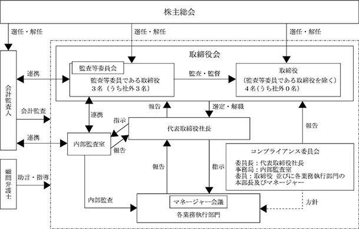

該当事項はありません。
該当事項はありません。
③ 【その他の新株予約権等の状況】
該当事項はありません。
該当事項はありません。
(注) 新株予約権の行使による増加であります。
2024年１月31日現在
(注) 自己株式46,635株は、「個人その他」に466単元、「単元未満株式の状況」に35株含めて記載しております。
2024年１月31日現在
2024年１月31日現在
（注）「単元未満株式」欄の普通株式には、当社所有の自己株式35株が含まれております。
2024年１月31日現在
該当事項はありません。
該当事項はありません。
(注) 当期間における保有自己株式数には、2024年４月１日から有価証券報告書提出日までの単元未満株式の買取りによる株式数は含めておりません。
当社は、株主の皆様への利益還元を重要な経営課題のひとつとして認識しており、将来の事業展開と経営体質の強化のために内部留保を確保しつつ、安定的な配当を行っていくことを基本方針としております。
当事業年度の期末配当につきましては、当事業年度の業績及び今後の事業展開等を勘案するとともに、安定的な配当を維持する観点から、１株当たり８円の配当を実施いたします。
当社は、会社法第454条第５項に規定する中間配当を行うことができる旨を定款に定めておりますが、現時点では期末日を基準とした年１回の配当を継続いたします。なお、配当の決定機関は、中間配当は取締役会、期末配当は株主総会であります。
（注）基準日が当事業年度に属する剰余金の配当は、以下のとおりであります。
（当社のコーポレート・ガバナンスに関する基本的な考え方）
当社は、株主の権利を尊重し、効率的かつ透明性の高い経営とともに、中期経営計画の達成を通じて企業価値を持続的に高めていくことが経営上の最重要課題と認識しております。
その実現のために、経営における迅速で公正な意思決定を重視するとともに、監視・監督機能が十分発揮される適切なコーポレート・ガバナンスの構築と運営に努めております。
（会社の機関の内容及び内部統制システムの整備の状況）
当社の取締役会は、取締役（監査等委員である取締役を除く）４名（うち、社外取締役０名）、監査等委員である取締役３名（うち、社外取締役３名）で構成されております。取締役会は原則１ヶ月に１回開催され、当社の経営に関する重要事項は取締役会決議によって決定しております。
監査等委員会は、監査等委員である取締役３名（うち社外取締役３名）で構成されております。監査等委員である取締役は、取締役会の他、重要な社内会議に出席し、取締役等からの説明の聴取を通じて、内部統制の構築及び運用の状況について確認を行うとともに、必要に応じて意見を表明しております。さらに、監査等委員会を定期的に開催し、監査等委員である取締役間での情報及び意見交換を行い経営監視機能の向上を図っております。
（提出日現在）

代表取締役社長(議長) 三澤 太
取締役 飯塚 智香
取締役 尾張 睦
取締役 鈴木 裕之
社外取締役(常勤監査等委員) 関根 章雄
社外取締役(監査等委員) 宮本 久美子
社外取締役(監査等委員) 粟澤 元博
監査等委員会の構成員は以下のとおりです。
社外取締役(常勤監査等委員・委員長) 関根 章雄
社外取締役(監査等委員) 宮本 久美子
社外取締役(監査等委員) 粟澤 元博
② 企業統治の体制を採用する理由
当社は、経営の透明性を一層向上させるとともに意思決定のさらなる迅速化を実現することが可能となると判断しております。
当社は、以下のとおり定める内部統制システムの基本方針に従って体制を構築しております。
１. 取締役及び使用人の職務の執行が法令・定款に適合することを確保するための体制
(1) 当社の取締役は、経営理念に則った価値観に基づく行動を率先垂範し、当社社内へ法令、定款及び企業倫理の遵守の徹底を図る。
(2) コンプライアンス体制の基礎として、コンプライアンス規程を定める。
(3) 当社は、コンプライアンス委員会を設置し、当社全体のコンプライアンス体制の維持発展を行う。
(4) 当社は、公益通報者保護規程を定め、コンプライアンス相談窓口を設置するとともに、法令、定款及び社内規程等に違反する事実やその恐れがある行為を早期に発見し、是正するための仕組みを構築し、維持する。
(5) 内部監査室は、各業務執行部門の業務監査を行い、必要に応じて体制の整備や改善について代表取締役社長に報告する。
(6) 当社は、経営理念を実現するために、社会秩序や社会生活の安全に脅威を与える反社会的勢力に対しては、一切の関係を持たず、毅然とした態度をもってこれに臨むこととする。万が一、反社会的勢力からの接触があった場合は、管理部門が対応することとし、必要に応じて、顧問弁護士や警察等の専門家に相談することとする。
２. 取締役の職務の執行にかかる情報の保存及び管理に関する体制
(1) 当社は、取締役の職務執行に係る情報について、法令、定款及び基本規程である文書管理規程に基づき適切に保存及び管理する。
(2) 前項の情報は、取締役がいつでも閲覧可能な状態を維持する。
３. 損失の危険の管理に関する規程その他の体制
(1) リスク管理体制の基礎として、リスク管理規程を定める。
(2) リスク管理委員会を設置し、リスク管理体制の維持発展を行う。
(3) 業務執行におけるリスクは、取締役がその対応について責任を持ち、改善策を審議・決定するものとする。また、必要に応じ、当該リスクの管理に関する規程の制定・ガイドラインの策定・研修活動の実施等を行うものとする。なお、重要なリスクについては取締役会に報告する。
４. 取締役の職務の執行が効率的に行われることを確保するための体制
(1) 取締役会規程に基づき定時取締役会を原則毎月１回開催し、必要ある場合には適宜臨時取締役会を開催することとする。また、各業務執行部門の活動状況の報告、取締役会での決定事項の通知等を行う会議体としてマネジャー会議を毎月１回開催することとし、経営情報の共有と業務運営の効率化を図る。
(2) 取締役を含む会社の業務執行全般の効率的な運営を目的として組織規程・職務分掌規程・職務権限規程を定め、実態に応じて適宜改正を行う。
５. 業務の適正を確保するための体制
(1) 当社は、関係会社管理規程に基づき、関係会社管理の方針と体制を定め、業務の円滑化と管理の適正化を図る。
(2) 取締役会は、定期的に関係会社の経営成績及び財政状態等について担当取締役より報告を受け、継続的に管理体制の改善及び向上に努める。
６. 監査等委員会の職務を補助すべき取締役及び使用人に関する事項、並びにこれらの者の独立性及び指示の実効性の確保に関する事項
(1) 監査等委員である取締役が内部統制システムの構築・運用等について監査をするため、その職務を補助すべき使用人を置くことを求めた場合、取締役会は監査等委員である取締役と協議の上、内部監査室人員又は必要とする各業務執行部門人員を人選・配置する。
(2) 監査等委員である取締役の配置下に入った使用人は、監査等委員である取締役の指揮下に入り、取締役の（監査等委員である取締役を除く）指揮命令は受けないものとする。
７. 監査等委員会への報告に関する体制及び当該報告をした者が当該報告をしたことを理由として不利な取扱いを受けないことを確保するための体制並びにその他監査等委員会の監査が実効的に行われることを確保するための体制
(1) 当社の取締役及び使用人は、当社に著しい損害を及ぼす恐れのある事項や重大な法令、定款違反行為又は不正行為を発見したときは、速やかに監査等委員会に報告する。
(2) 監査等委員会は、必要に応じて業務執行に関する報告、説明又は関係資料の提出を当社の取締役及び使用人に求めることができる。
(3) 当社は、前２項に従い監査等委員会に報告を行った者が、当該報告をしたことを理由として不利な取扱いを受けないように必要な措置を講ずるものとする。
(4) 当社の取締役は定期的に、以下の事項等について、監査等委員会に報告するものとする。
① 当社に著しい損害を及ぼす恐れのある事項
② 内部監査状況及びリスク管理に関する重要な事項
③ 重大な法令、定款違反行為
④ コンプライアンス上の重要な事項
⑤ その他の経営上、重要な事項
(5) 監査等委員は、取締役会のほか必要と判断した会議に出席し、事業活動における重要な決定や職務の執行状況について取締役（監査等委員である取締役を除く）及び使用人に対して説明を求めることができる。
８. 監査等委員の職務の執行について生ずる費用又は債務の処理に係る方針に関する事項
監査等委員である取締役が監査等委員の職務の執行上、必要と認める費用について、あらかじめ予算を計上する。ただし、緊急又は臨時に支出した費用については、当社は事後に償還に応じる。
９.業務の適正を確保するための体制の運用状況の概要
当社では、前記業務の適正を確保するための体制に関する基本方針に基づいて、体制の整備とその適切な運用に努めております。当事業年度における当該体制の運用状況の概要は以下のとおりであります。
(1) コンプライアンス及びリスク管理に関する取組みの状況
コンプライアンスにつきましては、代表取締役を委員長とするコンプライアンス委員会を設置しコンプライアンス状況を定期的にチェックするとともに、コンプライアンスに関わる必要な措置を講じ、その結果については取締役会に報告しています。リスク管理につきましても、代表取締役を委員長とするリスク管理委員会を設置し、リスクの把握、評価を行い、リスク発生の予防を図っております。
(2) 職務執行の適正及び効率性を確保するための取組みの状況
取締役会は13回開催され、各議案についての審議、業務遂行の状況等の監督を行い、活発な意見交換がなされており、意思決定及び監督の実効性は確保されております。また組織規程、職務権限規程等により、職務権限・意思決定のルールを明確にすることで適正かつ効率的な職務執行を図っています。
(3) 監査等委員会の監査の実効性を確保するための取組みの状況
監査等委員は取締役会のほか、重要な社内会議に出席するとともに、取締役等からの説明聴取を通じて、職務執行に必要な情報を入手しております。また監査等委員の職務の執行に必要な費用については、当社が負担しております。
当事業年度において当社は取締役会を13回開催しており、個々の取締役の出席状況については次のとおりであります。
取締役会における具体的な検討内容として、株主総会に関する事項、決算に関する事項、人事・組織に関する事項、株式に関する事項、経営計画に関する事項等になります。
当社は、機動的な利益配分を行うため、会社法第454条第５項の規定により、取締役会の決議によって毎年７月末日を基準日として剰余金の配当を行うことができる旨を定款で定めております。
また、当社は自己株式取得について、経済情勢の変化に対応して財務政策等の経営施策を機動的に遂行することを可能とするため、会社法第165条第２項の規定に基づき、取締役会の決議によって市場取引等により自己株式を取得することができる旨を定款で定めております。
当社は、取締役（監査等委員である取締役を除く）は７名以内とし、監査等委員である取締役は５名以内とする旨を定款で定めております。
当社は、取締役の選任決議は、議決権を行使することができる株主の議決権の３分の１以上を有する株主が出席し、その議決権の過半数をもって行う旨を定款で定めております。また、取締役の選任決議は、累積投票によらない旨を定款で定めております。
当社は、取締役の解任決議は、議決権を行使することができる株主の議決権の過半数を有する株主が出席し、その議決権の３分の２以上に当たる多数をもって行う旨を定款で定めております。
当社は、会社法第309条第２項に定める特別決議について、議決権を行使することができる株主の議決権の３分の１以上を有する株主が出席し、その議決権の３分の２以上に当たる多数をもって行う旨を定款で定めております。これは、株主総会における特別決議の定足数を緩和することにより、株主総会の円滑な運営を行うことを目的とするものであります。
当社と取締役（業務執行取締役等であるものを除く）とは、会社法第427条第１項の規定に基づき、同法第423条第１項の損害賠償責任を限定する契約を締結しております。当該契約に基づく損害賠償契約の限度額は法令が定める額としております。当該責任限定契約が認められるのは、当該取締役が責任の原因となった職務の遂行において善意かつ重大な過失がないときに限られます。
当社は、取締役を被保険者として、会社法第430条の３第１項に規定する役員等賠償責任保険契約を締結しており、被保険者が職務の執行に起因した責任を負うこと及び当該責任の追及に係る請求を受けることによって生じることのある損害を填補することとしております。ただし、法令違反の行為であることを認識して行った行為等に起因して生じた損害は填補されない等の一定の免責事由があります。
当社は、取締役が期待される役割を十分に発揮できるようにするため、定款において、取締役（取締役又は監査役であった者を含む）が会社法第426条第１項の規定により、任務を怠ったことによる損害賠償責任を、法令の限度において、取締役会の決議によって免除することができることとしております。当該責任免除が認められるのは、当該取締役等が責任の原因となった職務の遂行において善意かつ重大な過失がないときに限られます。
男性
(注) １．関根章雄、宮本久美子及び粟澤元博は、社外取締役であります。
２．2024年４月25日開催の定時株主総会の終結の時から2025年１月期に係る定時株主総会終結の時までであります。
３. 2024年４月25日開催の定時株主総会の終結の時から2026年１月期に係る定時株主総会終結の時までであります。
４．2023年４月27日開催の定時株主総会の終結の時から2025年１月期に係る定時株主総会終結の時までであります。
５．監査等委員会の体制は、次のとおりであります。
委員長 関根章雄 委員 宮本久美子 委員 粟澤元博
当社は、社外取締役３名を選任しております。
当社と社外取締役との間には、人的関係、資本的関係又は取引関係他その他の利害関係はありません。
社外取締役関根章雄氏は、住友大阪セメント株式会社に長年勤務し、財務及び会計の経験を有しており、宮本久美子氏につきましては弁護士の資格、粟澤元博氏につきましては公認会計士及び税理士の資格をそれぞれ有しており、企業経営及び法律や会計分野における豊富な経験、知識と高い見識に基づき、監査・監督の実効性を高める目的により、社外取締役を選任しております。
当社は、社外取締役を選任するための会社からの独立性に関する基準又は方針として明確に定めたものはありませんが、その選任にあたっては、一般株主と利益相反の生じる恐れがないよう、東京証券取引所の独立役員の独立性に関する判断基準等を参考にしております。
当社では、監査等委員である取締役３名を社外取締役としており、社外取締役による監査と内部監査及び会計監査との相互連携並びに内部統制部門との関係については、「(3) 監査の状況 ① 監査等委員会監査及び内部監査の状況」に記載のとおりであります。
(3) 【監査の状況】
１. 監査等委員会監査
当社の監査等委員会は、取締役３名（うち社外取締役３名）で構成され、取締役の職務執行の適法性を監査すると共に、取締役会に常時出席し客観的な立場から意見を述べるほか、当社の業務全般にわたり適法・適正に業務執行がなされているかを監査し、不正行為の防止に努めております。なお、社外取締役のうち２名はそれぞれ弁護士、公認会計士・税理士であり、その専門的な見地から発言をいただいており、また、常勤監査等委員は、取締役会に加え社内重要会議への出席、重要書類の閲覧、関係者からの聴取などにより、監査・監督の実効性を高めております。また、監査等委員会は内部監査室及び会計監査人と適宜情報交換を行い、相互連携を図っております。
当事業年度において監査等委員会は12回開催し、個々の監査等委員の出席状況は次のとおりであります。
監査等委員会における主な検討事項は次のとおりであります。
・監査の方針及び監査実施計画
・取締役の職務執行状況に関する監査
・内部統制システムの整備及び運用状況の監査
・会計監査人の監査の方法及び結果の相当性の監査
・会計監査人の評価
２. 内部監査
当社の内部監査の組織は、社長直属の独立した部門である内部監査室（１名）が内部監査担当部署として、年度監査方針及び監査計画を策定し、毎期子会社を含めた関係部署を対象として内部監査を実施しております。
監査結果を代表取締役社長に報告し、被監査部門に対しては改善事項の具体的な指摘及び勧告を行うとともに、改善状況の報告を受けることで実効性の高い監査の実施に努めております。また、監査等委員である取締役、会計監査人と密接な連携を図り、効率的、合理的な監査体制を整備してまいります。
１. 監査法人の名称
フェイス監査法人
２. 継続監査期間
１年間
３. 業務を執行した公認会計士
指定社員・業務執行社員 中川 俊介
指定社員・業務執行社員 枝川 哲也
４．監査業務に係る補助者の構成
当社の会計監査業務に係る補助者は公認会計士６名、その他１名であります。
当社は、会計監査人の選定に当たって、職業的専門家としての適切性、品質管理体制、当社からの独立性、過去の業務実績、監査報酬の水準等を総合的に勘案して判断しております。
なお、監査等委員会は、会計監査人の職務の執行に支障がある場合等、その必要があると判断した場合は、株主総会に提出する会計監査人の解任又は不再任に関する議案の内容を決定いたします。また、会計監査人が会社法第340条第１項各号に定める項目に該当すると認められる場合は、監査等委員全員の同意に基づき会計監査人を解任いたします。この場合、監査等委員会が選定した監査等委員は、解任後最初に招集される株主総会において、会計監査人を解任した旨と解任の理由を報告いたします。
６．監査等委員会による監査法人の評価
監査等委員会は、監査法人の監査の品質、報酬水準、独立性及び専門性、内部監査担当及び監査等委員とのコミュニケーションの状況などを総合的に勘案して評価しております。
７．監査法人の異動
当社の会計監査人は以下のとおり異動しております。
第64期（自 2022年２月１日 至 2023年１月31日） 有限責任監査法人トーマツ
第65期（自 2023年２月１日 至 2024年１月31日） フェイス監査法人
なお、臨時報告書に記載した事項は次のとおりです。
①選任する監査公認会計士等の名称
フェイス監査法人
②退任する監査公認会計士等の名称
有限責任監査法人トーマツ
2023年４月27日（第64回定時株主総会開催日）
2011年８月31日
該当事項はありません。
当社の会計監査人である有限責任監査法人トーマツは、2023年4月27日開催予定の第64回定時株主総会の終結の時をもって任期満了となります。現在の会計監査人につきましては、会計監査が適切かつ妥当に行われる体制を十分に備えていると考えておりますが、継続監査年数が長期にわたっていることに加え、経営環境の変化等に鑑み、当社の事業規模に適した監査対応と監査報酬の相当性等について総合的に検討した結果、当社の会計監査人としてフェイス監査法人が適任と判断いたしました。
①退任する監査公認会計士等の意見
特段の意見はない旨の回答を得ております。
②監査等委員会の意見
妥当であると判断しております。
２. 監査公認会計士等と同一のネットワークに属する組織に対する報酬（１. を除く）
該当事項はありません。
３. その他の重要な監査証明業務に基づく報酬の内容
該当事項はありません。
４．監査公認会計士等の提出会社に対する非監査業務の内容
該当事項はありません。
監査日数、業務内容等を勘案した上で決定しております。
監査等委員会は、会計監査人の監査計画の内容の評価を行い、当事業年度の監査日数及び報酬額の見積りの相当性を検討した結果、会計監査人の報酬等の額について会社法第399条第1項の同意を行っております。
(4) 【役員の報酬等】
① 取締役の個人別の報酬等の内容に係る決定方針に関する事項
１．基本報酬（金銭報酬）の個人別の報酬等の額の決定に関する方針
（報酬等を与える時期又は条件の決定に関する方針を含む）
当社取締役の基本報酬は、月例の固定報酬とし、その金額は、公平かつ適正に定めることを目的として、職務、職責等により決定するものとし、他社水準、社会情勢等を勘案して、適宜見直しを図るものとする。
２．非金銭報酬等の内容及び額又は数の算定方法の決定に関する方針
（報酬等を与える時期又は条件の決定に関する方針を含む）
非金銭報酬等は、譲渡制限付株式報酬とし、長期的な当社の業績向上・株価上昇へのインセンティブとして機能するようその内容、付与する数、及び付与する時期等を定めるものとする。原則として毎事業年度、譲渡制限付株式に関する報酬として金銭報酬債権を支給し、当該金銭報酬債権の全部を現物出資の方法で給付することにより、譲渡制限付株式の割当てを行うものとする。2023年４月27日開催の第64回定時株主総会により、年額１億円以内、当社普通株式年35,000株を上限とする。
３．金銭報酬の額、非金銭報酬等の額の取締役の個人別の報酬等の額に対する割合の決定に関する方針
取締役の種類別の報酬割合については、当社と同程度の事業規模や関連する業種・業態に属する企業の報酬水準を勘案し決定することとする。
また、決定方針は、取締役会が決定しております。
② 取締役の報酬等についての株主総会の決議に関する事項
取締役の報酬等の額については、2017年４月27日開催の第58回定時株主総会において、取締役の報酬限度額は年額５億円以内（ただし、使用人兼務取締役の使用人分給与は含まない。）、取締役（監査等委員）について年額２億円以内とすることを決議いただいております。上記の取締役（監査等委員である取締役は除く）の報酬限度額とは別枠として2023年４月27日開催の第64回定時株主総会において、譲渡制限付株式に関する報酬等として支給する金銭報酬債権の総額を、年額１億円以内とすることを決議いただいております。
なお、員数は定款において、取締役（監査等委員である取締役は除く）は７名以内、監査等委員である取締役は５名以内と定めております。
③ 取締役の個人別の報酬等の内容の決定に係る委任に関する事項
取締役（監査等委員である取締役は除く）の報酬は、株主総会で承認された報酬総額の範囲内で、取締役会からの委任を受け、代表取締役社長三澤太が報酬額を決定しております。委任した理由は、当社業績及び個人の貢献度等を総合的に勘案しつつ各取締役（監査等委員である取締役は除く）の担当について評価を行うには代表取締役社長が適していると判断したためであります。 また、監査等委員である取締役の報酬額は、株主総会で承認された報酬総額の範囲内で、監査等委員である取締役の協議により決定しております。
なお、当事業年度における取締役の個人別の報酬等の決定にあたっては、上記方針に従って、当該報酬等の内容を決定しております。従って、取締役会は、当該報酬等の内容が上記の方針に沿ったものであると判断しております。
④ 役員区分ごとの報酬等の総額、報酬等の種類別の総額及び対象となる役員の員数
(注)１．上記金額には、使用人兼務取締役の使用人給与は含まれておりません。
⑤ 役員ごとの報酬等の総額等
報酬等の総額が１億円以上である者が存在しないため、記載しておりません。
⑥ 使用人兼務役員の使用人給与のうち、重要なもの
該当事項はありません。
(5) 【株式の保有状況】
該当事項はありません。